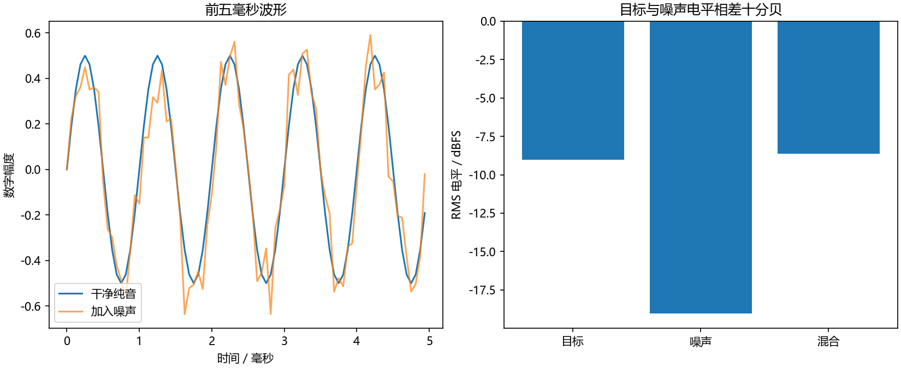
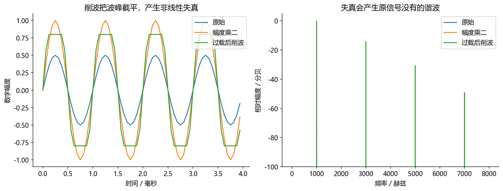

看图理解 · 跟着推演 · 对照真实结果
第03课 · 亲手配出10分贝信噪比
先建立直觉，再逐节讲原理、代码与结果；章节目录可定位学习。用一条纯音和一条噪声，分清峰值、RMS、数字电平和信噪比。
从直觉、原理，到代码与结果
本版保留导览小实验，增加教材逐节精讲、代码分段阅读和结果解释。三个项目另有本次真实模型短推理，第 12 课增加实际训练曲线。按右侧小节分次学习即可，不必一次看完。
完整文字、规范公式和注释代码仍在上方“读完整图文”。视频中的历史报告、教学算例与本次实测分别标明，短演示不冒充完整重训或设备验收。
先修：第01—02课；知道数组表示一段音频。
- 能计算峰值与RMS并解释差别
- 知道10log和20log分别用于什么
- 能构造指定SNR且不把它误称为响度或声压级
本课覆盖清单与证据范围
- 1. 同样最高点的两段声音，平均能量可能不同
- 2. 分贝不是独立的神秘单位，而是一个比值的对数
- 3. dBFS：相对于数字满刻度，不是相对于人耳
- 4. dB SPL：需要声压单位和测量校准
- 5. SNR：先说明信号和噪声分别是哪一条
- 6. 一段可运行代码，把四个量算出来
- 7. LUFS、响度、动态范围与削波
- 8. 一个真实工作式的小案例：怎么解释“增强后更安静”
- 9. 练习、答案和就业验收
结果从哪里来
- 导览中的小算例实际执行
- 原教材逐节讲解；正文代码/公式/图保留
合成数据拥有独立目标与噪声；这里的SNR不等于未知真实录音的可直接观测值，dBFS也不等于未校准的声压级或主观响度。
新版视频时间轴已改变，单独记录续播位置；学习计划的完成勾选保持不变。
跟着运行：注释代码、实际输出与结果图
下面代码在生成本站时实际执行。这里只是教学小实验，不是完整模型训练或业务设备测评。
import numpy as np
fs = 16000
t = np.arange(fs) / fs
s = 0.5 * np.sin(2 * np.pi * 1000 * t) # 干净目标
n = np.random.default_rng(7).normal(size=s.shape)
ps, pn = np.mean(s ** 2), np.mean(n ** 2) # 实际均方值
snr_db = 10.0
alpha = np.sqrt(ps / (pn * 10 ** (snr_db / 10)))
noise = alpha * n # 保留真正加入的噪声，便于核验
mixed = s + noise
rms = np.sqrt(ps)
t_ms = t * 1000
print('峰值/RMS:', np.max(np.abs(s)), rms)
print('RMS dBFS:', 20 * np.log10(rms))
print('实测SNR:', 10 * np.log10(ps / np.mean(noise ** 2)))
print('混合峰值:', np.max(np.abs(mixed)))
本次实际输出
峰值/RMS: 0.5 0.35355339059327384 RMS dBFS: -9.030899869919434 实测SNR: 9.999999999999998 混合峰值: 0.8922000243349858

精讲中的代码、运行步骤与大图
代码片段用于逐行理解；真实运行结果仅限明确标注“本次实际”的部分。教材历史图保留原有实验范围。
代码精读 06 · 第1–18行
源码精读 / 教学片段，需配套环境与上下文，不等同于独立脚本。
import numpy as np
fs = 16000
t = np.arange(fs) / fs # 一秒，包含整数个纯音周期
s = 0.5 * np.sin(2 * np.pi * 1000 * t)
rng = np.random.default_rng(7) # 固定随机种子，便于复现
n = rng.normal(size=s.shape)
target_snr = 10.0
# 用实际这段噪声的均方值缩放，而不是假设它恰好等于 1。
ps, pn = np.mean(s ** 2), np.mean(n ** 2)
alpha = np.sqrt(ps / (pn * 10 ** (target_snr / 10)))
noise = alpha * n # 单独保存实际加入的噪声
y = s + noise
# 峰值看最大瞬间，RMS 先平方、平均，再开根号。
peak = np.max(np.abs(s))
rms = np.sqrt(np.mean(s ** 2))
peak_dbfs = 20 * np.log10(max(peak, 1e-12))代码精读 06 · 第19–36行
源码精读 / 教学片段，需配套环境与上下文，不等同于独立脚本。
rms_dbfs = 20 * np.log10(max(rms, 1e-12))
measured_snr = 10 * np.log10(ps / np.mean(noise ** 2))
print("峰值/RMS:", peak, rms)
print("峰值 dBFS / RMS dBFS:", peak_dbfs, rms_dbfs)
print("构造的 SNR:", measured_snr)
print("混合音频峰值:", np.max(np.abs(y)))
# 用同一组信号画图：左边看波形，右边比较 RMS 数字电平。
from pathlib import Path
import matplotlib
matplotlib.use("Agg")
import matplotlib.pyplot as plt
plt.rcParams.update({"font.family": "Microsoft YaHei", "axes.unicode_minus": False})
assert Path("tutorial/chapters").is_dir(), "请在 audio-course-zh 根目录运行"
fig, axes = plt.subplots(1, 2, figsize=(11, 4.5), layout="constrained")
axes[0].plot(t[:80]*1000, s[:80], label="干净纯音")
axes[0].plot(t[:80]*1000, y[:80], alpha=0.7, label="加入噪声")
axes[0].set(xlabel="时间／毫秒", ylabel="数字幅度", title="前五毫秒波形")代码精读 06 · 第37–42行
源码精读 / 教学片段，需配套环境与上下文，不等同于独立脚本。
axes[0].legend()
levels = [20*np.log10(np.sqrt(np.mean(v**2))) for v in (s, noise, y)]
axes[1].bar(["目标", "噪声", "混合"], levels)
axes[1].set(ylabel="RMS 电平／dBFS", title="目标与噪声电平相差十分贝")
fig.savefig("tutorial/figures/ch03_snr_levels.png", dpi=150)
plt.close(fig)结果读图 06 · 6. 一段可运行代码，把四个量算出来
原教材运行记录

原教材已存图 不是本次新测 先确认实验范围 再解释坐标与单位
结果读图 06 · 6. 一段可运行代码，把四个量算出来
原教材运行记录

原教材已存图 不是本次新测 先确认实验范围 再解释坐标与单位
闭卷自测：目标均方0.01、原噪声均方0.04，构造10 dB SNR时，噪声幅度应乘多少？
所需噪声均方0.001；α=√(0.001/0.04)=√0.025≈0.1581。
逐字讲稿 · 可定位回看
两盏灯最亮时一样亮，一盏一直开着，另一盏只闪一下。只看最亮的一瞬间，分不出它们长期的能量差别。音频的峰值和平均能量也要分开看。
只做数字练习：甲为 [1, −1, 0, 0]，乙为 [1, −1, 1, −1]。两者最大绝对值都是 1，所以峰值相同。 甲先平方，得到 [1, 1, 0, 0]；平均为 0.5；开平方约为 0.707。乙的平方平均是 1，RMS 为 1。
如果把一段信号的每个值乘以 2，它的 RMS 也乘以 2，相同参考下的幅度电平增加约 6.02 dB。不是“乘以 2 就增加 2 dB”。 上述数组只是手算，不要直接大音量播放。数字峰值 1 也不能直接换成房间里的多少 dB SPL，后者需要设备与声压校准。
想象一盏一直亮的灯和一盏只闪一下的灯。最亮瞬间可以一样，但整段平均不同。音频的短爆音和持续纯音，也可能有相同峰值而不同均方根。
本例用峰值零点五的完整纯音，再加入随机噪声。我们要分别回答：目标电平多大，噪声电平多大，二者比值是多少，而不是只说声音很大或者很小。
这里的数值是数字幅度，不是经过校准的声压。先把数学量讲清楚，后面判断降噪、自动增益控制和削波时，才不会把不同问题混成一个分数。
正弦有正有负，直接平均可能接近零，但它显然不是静音。因此先平方，让正负都贡献非负量，再求平均，最后开根号回到原来幅度的量纲。
对于覆盖整数周期的理想正弦，均方根是幅度除以根号二。零点五除以根号二，约零点三五三六。这是我们对程序输出的第一条预测。
这个捷径只适用于满足条件的正弦。真实语音、脉冲和带长静音的录音，必须按数组实际计算。不要把任何音频峰值都除根号二当作均方根。
功率比为十，用十乘以十的对数，结果就是十分贝。分贝不是脱离参考量的绝对数，负分贝也不是负能量，只表示比参考值更小。
在功率与幅度平方成正比且比较条件一致时，幅度比要用二十乘对数。因为幅度先平方，会让对数前多出一个二，这才是十和二十的来源。
幅度翻倍大约增加六分贝，功率翻倍大约增加三分贝。两个六十分贝不能直接相加成一百二十；要先根据相干性和比较量回到线性域处理。
本课数字满刻度参考设为一，均方根约零点三五三六，对应约负九点零三分贝满刻度。峰值零点五则约负六点零二，两个数描述不同统计量。
声压级需要帕斯卡单位和明确参考声压，还需要麦克风与增益链路的校准。水下和空气常用参考量也不同，不能只拿一个分贝数字跨场景比较。
响度涉及听觉加权和测量规则，不等于均方根换个名字。静音取对数趋向负无穷，代码添加很小的数只是防数值问题，并没有测出设备的真实底噪。
峰值零点五的完整纯音，均方值是零点五平方再除二，也就是零点一二五。要十分贝信噪比，噪声均方值就应是零点零一二五。
注意不是噪声幅度简单除以十。均方值和幅度之间有平方关系，幅度缩放需要开根号。这也是混噪代码常见错误的来源。
我们手里有独立的干净目标和噪声，所以能精确控制合成信噪比。真实单通道录音只有混合结果时，通常没有这两个参考，不能直接宣称准确测出了真实信噪比。
我们生成一条随机噪声，但有限长度样本的均方值不一定恰好是一。因此先计算目标和这条噪声各自的均方值，再求缩放系数。
缩放后噪声的均方值是原均方乘系数的平方。让它等于目标均方除以十，就得到图中的开根号公式。这里没有神秘常数，都是从目标定义倒推。
这个式子要求目标和噪声都不是全零。全零噪声无论乘多大仍是零，不能用添加极小数掩盖无效输入，然后声称满足了一个有限信噪比。
前五行生成一秒目标和同样长度的噪声，形状都是一万六千。随机种子固定为七，方便在相同环境重现并检查结果，而不是让每次曲线都随机改变。
中间计算两个均方值和缩放系数。变量noise是实际加入的噪声，mixed才是混合。保留noise，后面才能用同一定义核验信噪比。
最后分别输出目标峰值、均方根、数字电平、信噪比和混合峰值。注意混合峰值需要另算，十分贝信噪比并不能自动保证峰值小于一或输出永不削波。
图只画前五毫秒，方便看清噪声怎样偏离纯音；计算均方值和信噪比使用的是完整一秒。只盯这小段的起伏，不能代替整段统计。
目标峰值应为零点五，均方根约零点三五三六。构造出的信噪比在浮点误差范围内是十分贝，显示成九点九九九九并不代表算法失败。
混合曲线有时高于目标，有时低于目标，因为噪声有正有负。这次图验证的是指定条件下的数据合成，不是某个增强模型的真实降噪表现。
如果把混合音频统一乘零点五，目标和噪声都减半，二者均方都乘零点二五，比例不变，所以信噪比不变。数字电平下降约六分贝，却不能叫改善了六分贝信噪比。
再想一段前九秒静音、最后一秒说话的录音。全段均方根与只统计说话区域的均方根会不同，比较前必须说清有效区间和是否做了归一化。
真正评估增强，要同时看语音有没有损失、残留噪声多少、是否引入失真，并结合试听和任务指标。把输出压到几乎听不见，当然很安静，却不是好算法。
目标均方零点零一，原噪声均方零点零四，要求十分贝信噪比，缩放系数是多少？请先求需要的噪声均方，再开根号。
需要噪声均方零点零零一。零点零零一除以零点零四等于零点零二五，开根号约零点一五八一。把这个系数平方乘回原均方，可以核验答案。
课后把代码目标改为零、五、十分贝，保存干净目标与实际噪声，并记录统计范围和峰值。不要只交三张波形图，要能解释为什么每个信噪比是对的。
取语音和噪声之前先固定裁剪位置、长度与声道规则。若语音前半段都是静音，全段RMS与只在说话区间算RMS会不同。两种定义都可以研究，但不能在不同方案中偷偷换定义。
假设语音RMS为零点二、噪声RMS为零点一，目标SNR是零分贝，那么噪声要放大两倍，两者功率才相等。十 分贝目标则要求噪声RMS变成语音的根号十 分之一。
相加后不能用混合波形的总能量代替干净语音能量来验证SNR，因为交叉项和有限样本相关性都会影响总能量。应保留干净分量和实际缩放后的噪声，按相同定义重新计算。
数字满刻度是文件或系统的幅值参考。把浮点峰值一作为零dBFS的峰值约定，可以检查削波风险，但不能因此知道现场有多少帕的声压。
声压级需要麦克风灵敏度、增益链和校准关系。没有这些信息，录音数组幅值变成两倍，只能说数字幅度变化了，不能随意宣称环境噪声增加到了某个声压级。
响度统计还会使用频率加权、门限和时间汇总。峰值相同、RMS相同，也不保证人听起来一样响。实习报告中要写出指标名称和参考，别只写一个没有单位口径的“分贝”。
想象两盏灯，一盏一直亮，另一盏每秒只闪一下。它们最亮的瞬间可以一样，平均消耗却不同。音频也类似：一个很短的爆音和持续正弦可以有同样峰值，但整体均方值不同。这个类比只讨论“瞬间最大值”与“长期平均”，不能把灯光观感直接当成听觉响度模型。
在阻抗与比例关系固定的条件下，均方值可作为与功率相关的量。不能不写条件就说“任何电压平方就是瓦特”。
一个峰值为 A、覆盖整数周期的理想正弦，RMS 为 （A）除以（平方根2）。所以峰值 0.5 的正弦 RMS 约 0.3536。常见语音不是完整稳定正弦，不能把任何录音的峰值都机械除以 平方根2 来得到 RMS。
功率比常用 10以十为底的对数 (（P下标2）除以（P下标1）)。若比较条件相同、功率与幅度的平方成正比，则对应的幅度比可写为 20以十为底的对数 (（A下标2）除以（A下标1）)。为什么一个是 10，一个是 20？因为对正幅度比 a>0，有 对数(a的幂2)=2对数(a)。
不是因为音频喜欢 20、图像喜欢 10。
手算三组就能建立直觉：幅度乘 2，变化约 +6.02 dB；幅度乘 10，变化 +20 dB；功率乘 2，变化约 +3.01 dB。反过来，幅度要提高 6 dB，应乘 10的幂6/20约等于1.995，不是乘 6。-20 dB 并不表示负能量，而表示幅度比参考值小到十分之一。 还有一个常见陷阱：两个声音各是 60 dB，不能直接相加得到 120 dB。若讨论不相关声源的平均功率，先换回线性功率相加，再转回 dB，等强两路约增加 3 dB。若是同相相干信号，压力/幅度相加会得到不同结果；如果反相，还可能抵消。相加之前先问“相干吗、比较什么量”。
按这个明确约定，峰值为 1 的完整正弦，峰值是 0 dBFS，RMS 约为 −3.01 dBFS。部分仪表对正弦 RMS 的标定约定不同，所以跨工具比较时要先看定义。
静音的幅度为 0，对数数学上趋向负无穷。代码加 eps 只是防止数值报错，或人为设置显示下限，不意味着静音真的有某个固定物理声压。若用 max(value,1e-12)，它定义了显示地板，不应拿这个地板去声称设备动态范围。
整数 PCM 的满刻度是编码边界，浮点处理过程中可以出现绝对值超过 1 的数字。它们不一定在内存中立即截断，但输出到某些定点格式或播放链路时可能发生削波。保存前检查峰值是必要的，简单整体缩放也不等于真正的动态处理设计。
声压级一般写作 L下标p=20以十为底的对数 (（p下标RMS）除以（p下标ref）)。空气声常用参考声压 20 微帕，水下常用 1 微帕；因此水声报告与空气声报告不能只拿数字直接比较。参考量差异本身已是约 26 dB，介质阻抗等物理条件也不同。
英国国家物理实验室 NPL 的单位说明列出了这些参考量。
手算：空气中若 RMS 声压为 0.02 Pa，与 20 微帕=0.00002 Pa 的比为 1000，声压级为 60 dB re 20 μPa。你录到的数组 RMS 为 0.02，却不能自动代入这个计算，因为 0.02 可能只是无单位数字。
要从数字推声压，需要知道麦克风灵敏度、增益、ADC 标定，或用可靠校准方法建立对应关系。
对你这样的水声背景学生，这一点很关键：课题组里的“声源级”“接收声压级”和互联网语音数据中的“数字幅度”有联系，
但不是同一个标签。简历可以写校准、建模和验证能力，不能把未校准的浮点值写成声压测量成绩。
信噪比 SNR=10以十为底的对数 (（P下标s）除以（P下标n）)，其中 P下标s 是目标信号均方值，P下标n 是噪声均方值。合成带噪数据时，若希望 s+alpha n 达到目标 S dB，可取：
上式用于有限目标 SNR，要求目标信号和原始噪声的均方值都大于零。全零噪声不能靠缩放变成所需噪声；全零目标信号也无法定义这里的有限信噪比。
例如目标语音均方值 0.01、原始噪声均方值 0.04，目标 10 dB，则 alpha=平方根（0.01）除以（0.04乘10）约等于0.1581。缩放后噪声均方值是 0.001，刚好是语音的十分之一。 这里使用整段均方值。语音有较长静音时，“整段 SNR”和“只在有效语音区域算的 SNR”会不同，论文、数据增强和评测必须保持口径一致。真实单通道录音只有混合波形时，通常没有干净参考，不能直接用一个公式准确知道真实 SNR。
整段在课程根目录 audio-course-zh 下运行，依赖 NumPy 和 Matplotlib。末尾保存本段信号的电平图，不播放声音。
右图目标与噪声的 RMS dBFS 相差 10 dB，与功率比定义一致；混合电平不是前两根柱子的算术和。左图看的是同一段混合后的前 5 ms，只是为了看清波形，不能用这 5 ms 的视觉起伏替代完整 1 秒的 SNR 计算。
s、n、noise 和 y 都是 (16000,)。mean 把一个数组归约成一个数，alpha 是标量，乘数组时广播到每一个采样。noise 单独保存非常重要：如果只保存混合后的 y，之后就不能靠简单相减均方值来获得可靠的同一定义噪声功率。
理论预期：峰值 0.5，RMS 约 0.353553；峰值约 −6.0206 dBFS，RMS 约 −9.0309 dBFS；构造的 SNR 在浮点误差范围内等于 10 dB。混合峰值依赖这段噪声样本，不能用“目标 SNR 是 10 dB”保证不会削波。
请运行后记录你的输出，不要把本段理论值当作真实设备测试。
本次实际运行上述代码，构造 SNR 为 9.999999999999998 dB，混合峰值约 0.892200，峰值与 RMS 的结果符合前述计算。这是数学合成数据验证，不是从真实录音准确估出了未知噪声。
图来自 beginner_labs.py 的 levels()，它使用同样的半幅 1 kHz 正弦，但扩展操作是“增益翻倍”和“过载削波”，
不是上方随机混噪。左图看削波后的平顶；右图看原先没有的谐波，说明限制最高点也可能改变音色。实际脚本测得幅度翻倍增加约 6.0206 dB。
右图幅度谱按自己的频谱计算约定显示，不能称为经过声压校准的测量图。
先看中文注释：一秒，包含整数个纯音周期；固定随机种子，便于复现。arange按固定步长生成索引。若随后除以采样率，才把采样点编号换成秒。 正弦或余弦的输入是弧度。频率乘以时间再乘二派，才得到相位；幅度系数控制波形大小。
先看中文注释：用实际这段噪声的均方值缩放，而不是假设它恰好等于 1。；单独保存实际加入的噪声。mean沿指定轴求平均。保留时间轴还是声源轴，会改变统计对象，所以必须核对axis或dim。 平方根常用于把均方量还原成幅度尺度。检查开方前是否非负，以及稳定项是在分母还是根号内部。
先看中文注释：峰值看最大瞬间，RMS 先平方、平均，再开根号。。绝对值对实数表示幅度大小，对复数表示模长。它丢掉符号或相位，不能代替完整复数频谱。 对数压缩动态范围。先确认输入非负并加小正数防止对零取对数；振幅比与功率比的分贝系数不同。
绝对值对实数表示幅度大小，对复数表示模长。它丢掉符号或相位，不能代替完整复数频谱。 对数压缩动态范围。先确认输入非负并加小正数防止对零取对数；振幅比与功率比的分贝系数不同。 mean沿指定轴求平均。保留时间轴还是声源轴，会改变统计对象，所以必须核对axis或dim。
先看中文注释：用同一组信号画图：左边看波形，右边比较 RMS 数字电平。。绘图展示的是传入数组。核对横轴单位、图例与统一尺度后，才可以比较不同处理的变化。
断言把预期写成可失败的检查。通过只说明这一条件成立，不自动代表声音质量或全部场景合格。 绘图展示的是传入数组。核对横轴单位、图例与统一尺度后，才可以比较不同处理的变化。
对数压缩动态范围。先确认输入非负并加小正数防止对零取对数；振幅比与功率比的分贝系数不同。 mean沿指定轴求平均。保留时间轴还是声源轴，会改变统计对象，所以必须核对axis或dim。 平方根常用于把均方量还原成幅度尺度。检查开方前是否非负，以及稳定项是在分母还是根号内部。
对数压缩动态范围。先确认输入非负并加小正数防止对零取对数；振幅比与功率比的分贝系数不同。 mean沿指定轴求平均。保留时间轴还是声源轴，会改变统计对象，所以必须核对axis或dim。 平方根常用于把均方量还原成幅度尺度。检查开方前是否非负，以及稳定项是在分母还是根号内部。
对数压缩动态范围。先确认输入非负并加小正数防止对零取对数；振幅比与功率比的分贝系数不同。 mean沿指定轴求平均。保留时间轴还是声源轴，会改变统计对象，所以必须核对axis或dim。 平方根常用于把均方量还原成幅度尺度。检查开方前是否非负，以及稳定项是在分母还是根号内部。
先看这张随教材保存的图。本段指定 10 dB 信噪比代码的实际波形与电平图。本次视频引用既有结果，不把它称为新运行。
横轴、纵轴、图例和单位决定图在回答什么问题。若曲线重合，先问它验证的是数值等价、形状还是算法质量。图像相似不自动证明真实业务效果相同。
把图中观察与本节假设联系起来，再回到前面的代码确认数组来源。合成信号实验、历史报告和真实模型输出属于不同证据范围，不能混成同一个成绩。
先看这张随教材保存的图。已运行的电平变化与削波频谱实验。本次视频引用既有结果，不把它称为新运行。
横轴、纵轴、图例和单位决定图在回答什么问题。若曲线重合，先问它验证的是数值等价、形状还是算法质量。图像相似不自动证明真实业务效果相同。
把图中观察与本节假设联系起来，再回到前面的代码确认数组来源。合成信号实验、历史报告和真实模型输出属于不同证据范围，不能混成同一个成绩。
响度是听觉感知概念；RMS 是数学统计量。LUFS/LKFS 等节目响度度量使用指定的频率加权、声道处理及测量规则，不能用一句“就是 RMS 换单位”代替。True Peak 又关心重建波形可能出现的采样间峰值，不等于数组最大采样值。需要正式测量时应使用实现相应规范的工具，并记录设置；
ITU-R BS.1770规定了节目响度与真峰值相关算法。
峰均比（crest factor）可用 20以十为底的对数 (（x下标peak）除以（x下标RMS）) 表示。完整正弦约为 3.01 dB，脉冲型信号可以大很多。AGC 试图调节整体电平，压缩器随电平改变增益，限幅器侧重限制峰值，它们不是完全相同的工具。 先学会把目标写成“希望短时 RMS 稳定且不引入明显失真”，比笼统说“让声音更大”更有工程意义。
假设同事说降噪输出更安静，你首先不应问“是不是网络没训好”，而应拆成三个问题：目标语音有没有被压低，噪声有没有被压低，播放链路有没有改变。把输出峰值归一化后再听，可能掩盖语音损失；把所有样本逐条归一化到同一峰值，也可能让静音段的噪声被意外放大。
做对比时保留未经后处理的输出，同时标注是否有统一播放增益。若有干净参考，先对齐时间与长度，分开检查目标保真和残留噪声。没有参考时，不能把“整体 RMS 更小”直接当成降噪成功：把所有样本乘 0.001 也会更小，但内容同样被抹掉了。
再设想一段录音前 9 秒静音、最后 1 秒有人说话。按整段算 RMS，语音能量被分摊到 10 秒；只在说话区域算，数值会大很多。这里没有谁天生算错，错的是没说明统计区域就把两个数放一起比较。项目报告应写时间窗、有效区间、参考量以及是否经过归一化。 现在做一个不需要新代码的预测：在本课 s 前面拼接 1 秒全零，噪声只在原来 1 秒出现和噪声覆盖完整 2 秒，计算的整段 SNR 是否相同？前一种只是同时增加静音，信号与噪声的均方都减半，SNR 不变；后一种噪声还持续存在，整段 SNR 会下降。能解释这点，你就能开始审查数据增强脚本的口径了。
1. 幅度降低到一半，dB 变化是多少？答：约 −6.02 dB。 2. 峰值 0.2 的完整正弦，按本课定义峰值和 RMS dBFS 各是多少？答：约 −13.98 和 −16.99 dBFS。 3. 整段录音统一乘 0.5，已有的 SNR 是否变化？
答：目标与噪声同时缩放且无额外失真时不变，但绝对数字电平降低。 4. 目标 SNR 相同，为什么一个增强数据集更难？答：噪声类型、时频重叠、混响、有效语音口径、说话人和设备差异仍可能不同。 5. 能否把普通录音的 −20 dBFS 直接换算为 74 dB SPL？答：不能，缺少测量链路校准关系。
实习验收任务：给 20 条音频统计时长、峰值、RMS、削波比例和静音比例，先写清每个统计量的口径；再构造 0、5、10 dB 三档带噪样本，保留干净语音和实际加入的噪声。报告里区分“数字电平”“信噪比”“感知评价”，不要只写一个没有参考量的 dB。
适用边界与参考正文
合成数据拥有独立目标与噪声；这里的SNR不等于未知真实录音的可直接观测值，dBFS也不等于未校准的声压级或主观响度。
教学图与实验图由本站整理生成；项目代码、预训练模型和公开数据的来源见配套正文。旁白是本地中文语音合成，不是教师真人录音，也不是 NotebookLM 生成。没有向 Google 上传项目材料。